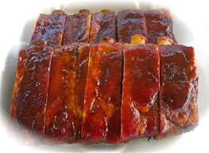

BBQ Ribs

Description
This recipe is great for family gatherings or impressing the bbq lovers in your life!
This is pretty simple and has a roughly 1 hour prep time.
Ingredients for the sauce
- 1/2 teaspoon of garlic salt
- 1 cup of ketchup
- 1/2 cup of honey(scant)
- 2 tablespoons of worcestershire sauce
- 1 and 1/2 teaspoons of liquid smoke
- 1/2 teaspoon of pepper
- 1/2 cup of brown sugar
- 1/4 cup of spicy brown mustard
Additional ingredients
- 1 rack of ribs
- 1 crock pot with water
Steps
- First, put the ribs in the crockpot and begin boiling for one hour.
- Keep cooking if it is not yet tender.
- Next, Grill, and baste with sauce occasionally.
- Lastly, allow to cool and serve with leftover sauce on the side.
Back to homepage!
Home!